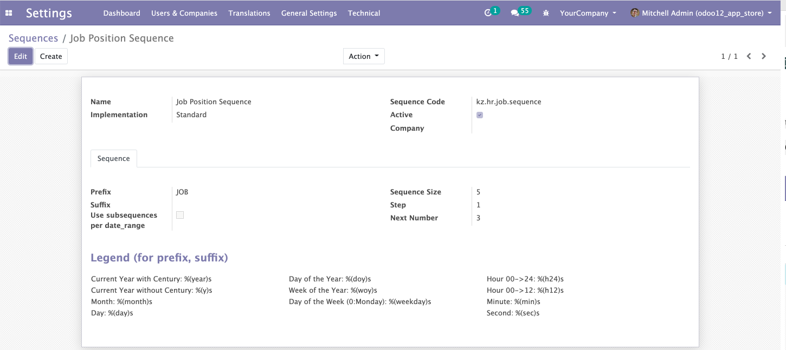
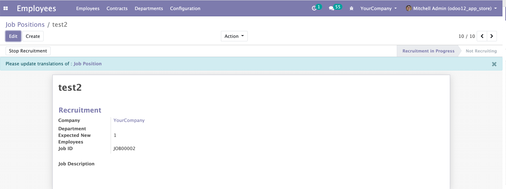

<section class="oe_container oe_dark"
    style="overflow: hidden; background: #efefef; box-shadow: none;">
    <div class="row mt32 mb32">
        <div class="col-md-12">
            <h3 class="oe_slogn" style="text-align: center;">
                This module generates sequence number when creating job positions in odoo.
            </h3>
        </div>
    </div>
</section>

<section class="oe_container oe_dark">
    <section class="oe_container oe_dark lead">
        <div class="oe_row">
            <div class="oe_span12" style="width: 100%">
                <div class="panel panel-primary"
                    style="border-color: #2F4F4F !important;">
                    <div class="panel-heading"
                        style="background-color: #2F4F4F !important;">
                        <h3 class="panel-title alert"
                            style="font-weight:500;color:white;">
                            <strong><i class="fa fa-mail-forward"></i> Key Features: </strong>
                        </h3>
                    </div>
                    <div class="panel-body">
                        <ul class="list-unstyled">
                            <li>
                                <i class="fa fa-check text-primary"
                                style="color: #2F4F4F !important;"></i>
                                Generate sequence number for job positions
                            </li>
                        </ul>
                    </div>
                </div>
            </div>
        </div>
    </section>
</section>
<br />


<section class="container mt32">
    <div class="row">
        <div class="oe_span12">
            <h4 class="text-center alert"
                    style="font-weight:500;background: #efefef;">
                <span align="center" class="label label-success "> <span
                    class="fa fa-compass fa-spin"></span> Usage Of Module
                </span>
            </h4>
        </div>

    </div>
</section>


<section class="oe_container oe_dark">
    <div class="oe_row oe_spaced">
        <div class="oe_span12">
            <h2 class="text-center alert"
                style="font-weight:500;">
                Set the job sequence format in odoo 'Settings->Technical->Sequences', search the sequence by code 'kz.hr.job.sequence'.
            </h2>
            <br/>
            
        </div>
    </div>
    <div class="oe_row oe_spaced">
        <div class="oe_span12">
            <h2 class="text-center alert"
                style="font-weight:500;">
                Create Job position, the sequence number will show as Job ID in job position form.
            </h2>
            <br/>
            
        </div>
    </div>
</section>

<section class="oe_container lead">
    <div class="oe_row oe_spaced">
        <div class="oe_span12" align="center">
            <h2>
            <a href="mailto:1764076874@qq.com" style="color: #2F4F4F !important;" >
                Contact &amp; Support
            </a>
            </h2>
        </div>
    </div>
</section>

